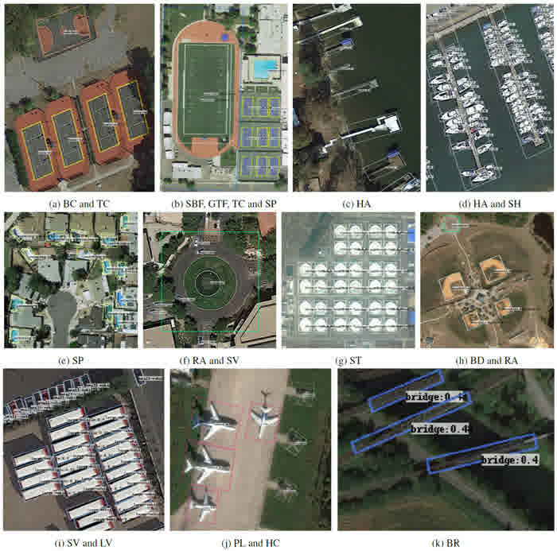

01 / 城市与自然资源
地物提取与变化检测
识别建筑、水体与植被，找出多期影像中的变化区域。
输出结果地物轮廓 · 分类结果 · 变化区域
查看识别案例

01 / 行业解决方案
从遥感调查到现场巡检，提取需要关注的目标与区域，交付可复核的识别结果。
02 / DELIVERY
按项目目标约定交付范围，从样本验证推进到实际使用。
提供目标位置、变化区域或缺陷标注，方便业务人员核查。
用实际样本验证和优化模型，按约定指标评估识别效果。
根据现有系统与运行环境，提供接口和部署方案。
03 / CASES
从具体算法出发，查看效果与应用场景。
从卫星与航空影像中提取地物边界、类别和空间分布。
01 / 地物提取
从卫星或航拍影像中提取建筑物轮廓，形成建筑分布结果。
城市底图更新、建筑资源调查、园区资产管理

02 / 地物提取
根据影像中的边界与纹理划分地块，辅助地块调查与管理。
地块调查、农业地块管理、用地范围统计

03 / 地物提取
识别河流、湖泊等水域，提取水体范围与边界。
水域调查、水面变化监测、河湖巡查

04 / 地物提取
识别影像中的林地覆盖范围，辅助森林资源调查。
森林资源调查、林地覆盖统计、生态监测

05 / 地物提取
提取农业大棚的位置与轮廓，辅助设施农业调查。
设施农业调查、大棚分布统计、农业用地管理

06 / 地物提取
识别集中式与分布式光伏区域，提取设施的位置与范围。
光伏资源调查、设施分布统计、能源资产管理

识别重点目标，结合序列影像开展定位与持续追踪。
01 / 检测与追踪
识别图像或视频中的无人机目标，标记目标位置。
空域目标观察、低空巡查、无人机目标定位

02 / 检测与追踪
检测影像中的飞机目标，形成位置标注。
机场设施调查、航空影像解译、飞机目标统计

03 / 检测与追踪
从海面、港口等场景影像中检测舰船目标。
港口调查、海面目标观察、舰船分布统计
04 / 检测与追踪
识别画面中的火焰区域，为后续人工复核提供位置线索。
现场视频巡查、火情线索发现、重点区域复核

05 / 检测与追踪
在连续视频帧中关联车辆，记录同一目标的运动轨迹。
交通流观察、车辆轨迹分析、道路运行统计
06 / 检测与追踪
识别影像中的桥梁目标，辅助设施调查与定位。
交通设施调查、桥梁定位、基础设施管理
对比多期影像，发现区域变化并形成专题分析结果。
01 / 时空变化
对比同一区域的不同时期影像，标出建筑新增、拆除等变化。
城市更新调查、建筑新增与拆除核查

02 / 时空变化
对比多期影像，定位地物覆盖发生变化的区域。
区域变化调查、用地变化复核、专题制图


03 / 时空变化
分析同一区域的连续观测，呈现目标随时间的变化趋势。
区域发展观察、植被时序分析、长期变化统计

04 / 时空变化
结合可用影像和空间信息，估计建筑物高度。
城市三维分析、建筑高度分布调查

05 / 时空变化
结合地形、地物和项目约束，筛选光伏建设的候选区域。
候选区域筛选、光伏资源调查、建设条件评价

改善影像质量，保留分析与识别需要的细节。
01 / 影像增强
提高低分辨率影像的显示细节，为后续查看和分析提供输入。
低分辨率影像处理、历史图像细节改善

02 / 影像增强
调整亮度、对比度等影像表现，改善数据的可读性。
低对比度图像处理、图像细节增强

03 / 影像增强
对齐不同时间或来源的影像，为变化分析和数据融合做准备。
多期影像对齐、多源数据融合准备

04 / 影像增强
按目标或类别划分影像像素，形成区域级识别结果。
场景要素识别、目标区域划分、专题图制作

05 / 影像增强
拼接多幅具有重叠区域的影像，形成连续覆盖的图像。
航拍图像拼接、区域影像整合

06 / 影像增强
统一多幅影像的亮度与色彩表现，减少拼接处的视觉差异。
多幅图像色彩统一、拼接过渡优化


从影像中识别作物与植被，辅助农业和生态监测。
01 / 农林生态
识别影像中的作物类别，呈现种植类型与空间分布。
种植结构调查、农作物分布统计、农业监测

02 / 农林生态
结合影像特征区分树木类别，辅助林业调查。
林业调查、树种分布分析、生态资源管理
03 / 农林生态
识别作物或树木上的疑似病虫害表现，标出复核目标。
农业巡查、叶片病害筛查、样本辅助复核

04 / 农林生态
检测画面中的羊只，辅助群体定位和数量统计。
牧场巡查、羊群目标统计、航拍监测

05 / 农林生态
检测画面中的牛只，辅助群体定位和数量统计。
牧场巡查、牛群目标定位、养殖统计

06 / 农林生态
识别水面的疑似漂浮垃圾，为清理与巡查提供位置线索。
河湖巡查、漂浮物定位、清理作业辅助

从巡检图像中识别缺陷与风险，定位需要复核的区域。
01 / 安全与质检
分析输电线路巡检影像，标出疑似设施隐患与周边风险。
输电设施巡检、绝缘子缺陷复核、线路维护

02 / 安全与质检
分析可见光或热成像数据，标出疑似光伏组件缺陷。
光伏组件巡检、疑似缺陷定位、运维辅助

03 / 安全与质检
检测作业人员及安全帽佩戴情况，标出需要复核的目标。
作业现场巡查、安全帽佩戴识别

04 / 安全与质检
识别焊接件图像中的疑似缺陷，辅助工业质量检查。
焊接质量检查、X 光图像分析、缺陷辅助复核

05 / 安全与质检
分析齿轮表面图像，标出疑似瑕疵区域。
齿轮表面检查、缺损与划痕识别

06 / 安全与质检
提取道路表面的裂缝位置与轮廓，辅助路面巡检。
道路养护巡查、路面病害定位、裂缝轮廓提取


04 / DEMONSTRATIONS
观看追踪、抠图与三维识别在连续画面中的输出。
当前片段未能播放。打开视频文件
在道路视频中关联目标标识，展示车辆运动与轨迹。
效果片段10 部
05 / COLLABORATION
从一个业务问题和一批样本开始。先确认要识别什么、如何验收，再确定研发与部署范围。
结合样本数据、业务目标和运行环境，确定验证范围。
针对场景研发和优化模型，按约定指标验证效果。
根据项目提供模型、接口与部署方案。